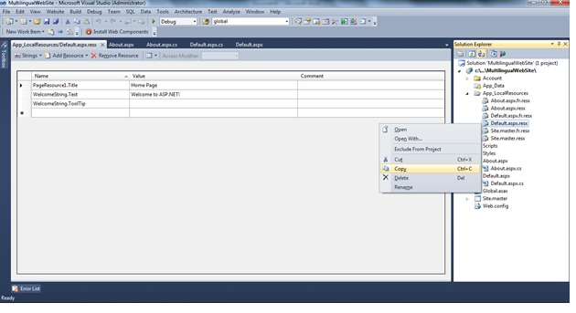
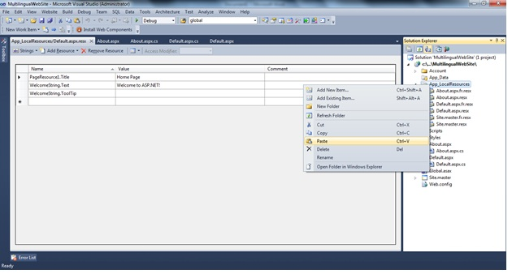
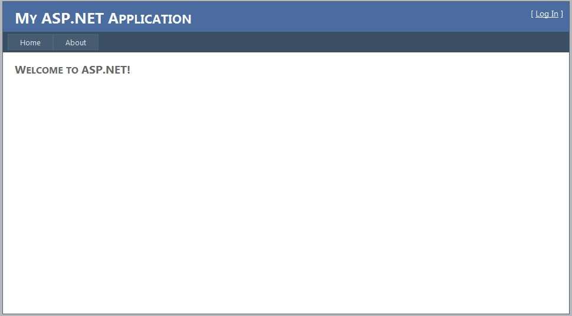

Asp.Net Multilingual WebSite
Introduction
This sample is developed to provide the solution to Multilanguage support for the ASP.Net web application with .Net 4.0.
Building the Sample
This application / website is developed with the use of ASP.Net 4.0 framework.
Description
This application / web site can be used as an example for multilingual web application by implicit localization.
In this application we have made use of resource files to store the strings from different languages.
This way of implementing the Multilanguage application is called implicit localization. In implicit localization, you specify that control properties should automatically be read from a resource file, but you do not need to explicitly specify which properties are localized.
Then, you create a resource file with localized values for specific properties. At run time, ASP.NET examines the controls on the page. If the control is marked to use implicit localization, ASP.NET looks through the resource file for the page. If it finds property settings for the marked control, ASP.NET substitutes the values in the resource file for those in the control.
This application currently supports only two languages such and EN-US (English) and FR-FR (French).
An effective way to create localized Web pages is to use resource objects for your page's text and controls. By using properties placed in resource objects, ASP.NET can select the correct property at run time according to the user's language and culture. The process is straightforward:
· A set of resource files (.resx), one file for each language, stores localized text.
· In your page, you indicate that controls should use resources for their property values.
· At run time, the browser indicates the user's preferred language, ASP.NET selects the appropriate .resx file, and the controls' property values are derived from the resource file.
Below are the steps to be performed to make the web application as Multilingual.
Begin with go to the solution explorer and click on the .aspx page.
Go to the design of the .aspx page this will open the design of the aspx page as shown below.

Click on the Tool menu in visual studio and then click on the “Generate Local Resource” which will add the resource file for the current selected aspx page under the App_LocalResources.

In solution explorer we are able to see the resource files which are created and also there are some files which are created for French language.

Default.aspx.resx file we have similar file for French language as Default.aspx.fr.resx
NOTE:
Every new language and culture combination requires a unique resource file. To add other cultures, you can use your default file as a starting point. The simple way of creating resource file for different cultures and locales is by using the ISO codes.
The ISO codes are placed between the page name and the .resx file name extension, as in Default.aspx.FR-Fr.resx. To specify a culturally neutral language, you would eliminate the country code, such as Sample.aspx.fr.resx for the French language.
Steps to Add new resource file for new language (en-gb) supported by application.
Below are the steps to be performed to add support for new language in the application.

Right Click on Default.aspx.resx file and click “Copy”

Right Click on “App_LocalResource” folder and click “Paste” this will create the new resource file as “Copy of Default.aspx.resx” rename the file as “Default.aspx.en-gb.resx” and save the file.

Resource file will get created for the “en-gb” culture.
Test the Application
To test the application for different languages run the application by clicking the Ctrl + F5 and once the application is launched then go to Internet Explorer click on "Tools" -> "Internet Options" -> "Languages" and selecte language with which you want to test the application and make the language as your first language using "Move up" button click "OK" and then click F5 you should be able to see the changes as per the new language selected.
Test with language as "EN-US".

Test with language as "FR-Fr".

Code is part of solution file uploaded.
Code is part of solution file uploaded.
Source Code Files
More Information
For More information please visit the MSDN website :
http://msdn.microsoft.com/en-us/library/fw69ke6f(v=vs.100).aspx
We can also do the translation using Bing and Google API’s.
www.societyinpocket.com is the live example of Language translation using Google API’s i have come across.